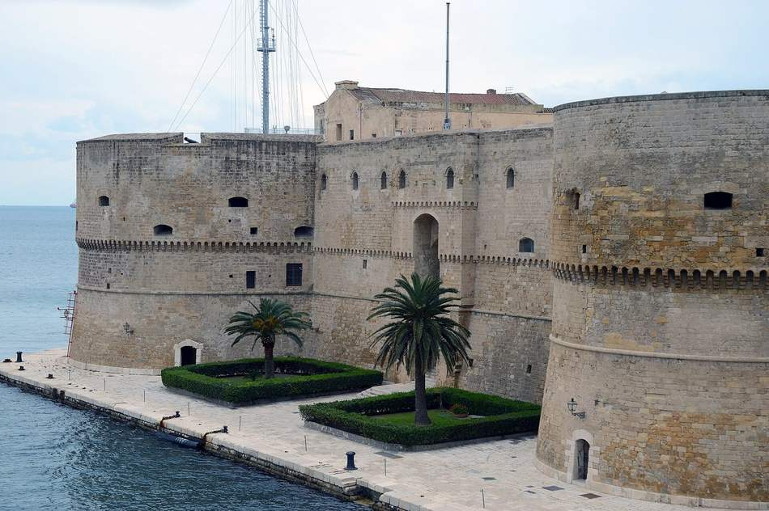
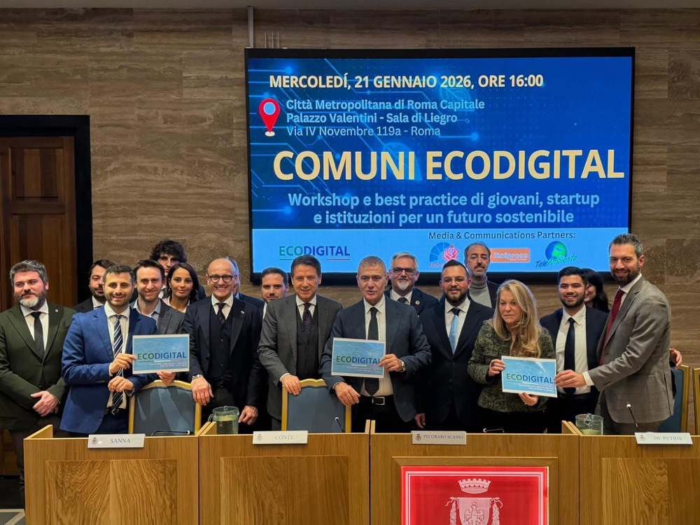

Il manifesto · verso il 2050
Dieci cose belle da cercare e far crescere.
Il manifesto EcoDigital sta in dieci punti. Ogni punto dice una cosa che in Italia qualcuno sta già facendo, con il posto e la data.
Lo firmano cittadini, amministratori, imprese, startup e studenti. La firma non iscrive a nulla e serve a contare quante persone la pensano così.
La rete è nata nel 2021 e da allora ha fatto 56 tappe, da Milano a Vietri sul Mare. I dieci punti vengono da quelle tappe.
I dieci punti
Uno per uno, con il fatto che lo tiene in piedi.
Sotto ogni titolo c'è una legge, un progetto, una data o un numero. Dove il fatto viene da una tappa della rete, trovi scritta la città.
Scorri
Mare
Mare protetto
La legge sull'Area Marina Protetta dell'Isola di Capri è del 4 agosto 2026.
Il 27 agosto 2026 Alfonso Pecoraro Scanio ha chiesto al Governo di istituire le aree marine che ancora mancano.
L'obiettivo si chiama 30x30: il 30% del mare protetto entro il 2030.


Dati
Dati aperti
A Taranto il progetto europeo Prometheus mette il Comune accanto a partner italiani e greci, con sensori, droni e intelligenza artificiale e siti pilota tra il Mar Piccolo e San Vito.
I dati che escono da quei sensori riguardano chi vive lì, quindi vanno pubblicati in formato aperto.
La stessa cosa la chiediamo a ogni amministrazione che incontriamo.
Intelligenza artificiale
Modelli che si dichiarano
Il video «Il Viaggio del Delfino» è fatto con l'intelligenza artificiale e l'11 settembre 2026 ha ricevuto un riconoscimento a Venezia, alla 83ª Mostra del Cinema.
Nessun drone ha inseguito un animale vero per girarlo.
Chi usa questi strumenti dica quanto consumano, su quali dati sono addestrati e chi risponde quando sbagliano: Ettore Iorio ne ha parlato all'EcoDigital Forum di Roma del 22 luglio 2026.

Lavoro
Lavoro che cambia
A Taranto i corsi del Just Transition Fund hanno messo in formazione gratuita 750 lavoratori dell'indotto industriale, su green economy, blue economy, cultura e innovazione.
La Camera di commercio certifica le competenze della doppia transizione.
Prima si scrive l'elenco dei mestieri che serviranno, poi si fissa il calendario dei corsi.

Paesaggio
Paesaggio curato
Nel 2025 la FAO ha riconosciuto i terrazzamenti della Costiera amalfitana come patrimonio agricolo mondiale, terzo sito italiano nella rete GIAHS.
I muretti a secco trattengono terra e acqua, quindi chi li ripara fa manutenzione di un intero versante.
È un mestiere e va pagato come tale.


Imprese
Imprese con i numeri
Alle imprese chiediamo consumi, emissioni, filiera e durata dei prodotti, scritti in un bilancio che si legge senza decoder.
Nel febbraio 2025 la rete ha portato negli incontri la trasparenza nella rendicontazione ESG, e ne hanno scritto askanews e Italpress.
A Ecomondo, a Rimini dal 3 al 6 novembre 2026, andiamo a cercare chi quei numeri li pubblica già.
Comuni
Comuni digitali
Il 21 gennaio 2026, a Roma, il workshop «Comuni EcoDigital» ha messo allo stesso tavolo sindaci e amministratori.
Giovanni Legnini, che la rete ha incontrato a Chieti il 14 maggio 2026 ed è stato eletto sindaco l'8 giugno, ha destinato metà della sua indennità a borse di studio.
Un servizio pubblico digitale si deve aprire anche con un telefono vecchio e una connessione lenta.

Istituzioni
Tavoli aperti
All'Assemblea Regionale Siciliana l'intergruppo EcoDigital è nato il 13 settembre 2024 e riunisce 13 deputati di otto gruppi diversi, con la presidenza di Jose Marano.
È il primo in Italia e gli altri consigli regionali lo possono ricopiare.
Serve un tema su cui vale la pena sedersi insieme e una presidenza dichiarata, così si sa a chi chiedere.

Giovani
Giovani e startup
Anselmo Pellizzi cura il blocco pitch e best practice degli incontri, dalla Rome Future Week del 16 settembre 2025 all'EcoDigital Forum di Roma del 22 luglio 2026.
Riccardo Del Prete, di Bring Value, segue la rete dal dicembre 2024, e Valentina Vecchia ha portato Idra Water sul palco.
Chi ha una startup che risolve un pezzo di problema la candidi scrivendo a info@ecodigital.it.

Misura
Numeri verificabili
Una pratica che funziona lo dimostra con un numero scelto prima e controllato dopo: 750 lavoratori in formazione a Taranto, 13 deputati nell'intergruppo siciliano, 56 tappe dal 2021.
Quando il numero manca, lo scriviamo.
Vale anche per questo sito, che dichiara quanto pesa ogni pagina.

Firma il manifesto
Metti il tuo nome accanto agli altri.
Il muro delle firme si aggiorna appena premi il bottone. In questo prototipo i dati restano nel tuo browser e non parte nessuna mail. Nella versione pubblica servono nome, iniziale del cognome, città e categoria, con l'informativa privacy.
Le firme di partenza di questo prototipo sono di esempio, con nomi di fantasia.